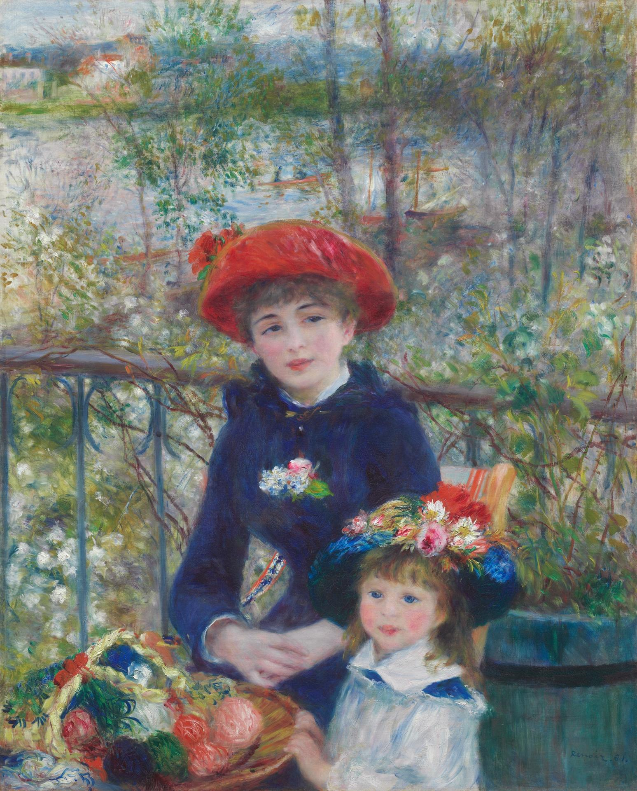

两姐妹（在露台上） Two Sisters (On the Terrace)
雷诺阿 · 1881年 · 芝加哥艺术博物馆
Pierre-Auguste Renoir · 1881 · Art Institute of Chicago
图片：芝加哥艺术博物馆开放资源（CC0），公有领域 / Image: Art Institute of Chicago, CC0 public domain

发现 · Discover
同一个露台 The same terrace
这是沙图富尔奈斯餐厅的露台。就在画这幅画之前不久，雷诺阿在同一个地方画了《游艇上的午宴》。
This is the terrace of the Maison Fournaise at Chatou. Shortly before, Renoir had painted Luncheon of the Boating Party in the very same place.
红帽子 The red hat
年长的女子戴着一顶鲜红色的帽子，是整幅画最亮的一点颜色。
The older girl wears a bright red hat, the most vivid touch of colour in the painting.
毛线篮 The basket of wool
前景放着一个篮子，里面装着彩色的毛线团。
In the foreground is a basket filled with balls of coloured wool.
河上的船 Boats on the river
越过栏杆，能看到塞纳河边停着的划艇和帆船。
Beyond the railing, rowing boats and sailing boats are moored along the Seine.
“和树搏斗” “Struggling with trees”
雷诺阿写信给朋友说，他因为这幅画不想去英国旅行：“我正在和树搏斗。”
Renoir wrote to a friend that he didn't want to leave for England because of this painting: “I am struggling with trees.”
签名 The signature
右下角用蓝色颜料签着“Renoir. 81.”。
Lower right, in blue paint, is the signature “Renoir. 81.”
不是姐妹 Not sisters
“两姐妹”这个画名，是画商在1882年画展时取的。芝加哥艺术博物馆的研究认为，坐着的年轻女子叫让娜·达尔洛，旁边的小女孩并不是她的妹妹。
The title “Two Sisters” was given by the dealer for the 1882 exhibition. Research at the Art Institute of Chicago identifies the seated young woman as Jeanne Darlaud; the little girl beside her was not her sister.
故事 · The story
ACT I 第一幕 · 河边的春天 Spring by the river
1881年春天，雷诺阿又回到沙图的富尔奈斯餐厅。4月，他在露台上开始画这两个女孩。
In spring 1881, Renoir returned to the Maison Fournaise at Chatou. In April, he began painting these two girls on the terrace.
1881年 · 芝加哥艺术博物馆 / 1881 · Art Institute of Chicago
ACT II 第二幕 · 很快就卖掉了 Sold at once
画还没完全晾干，7月就被画商买下。那年底，一本时装杂志刊登了它的彩色复制品；第二年，它在第七届印象派画展上展出。
That July, a dealer bought the painting. Later that year a fashion magazine published a colour reproduction of it, and the following spring it was shown at the seventh Impressionist exhibition.
1881年 · 芝加哥艺术博物馆 / 1881 · Art Institute of Chicago
ACT III 第三幕 · 来到芝加哥 To Chicago
1933年起，它收藏在芝加哥艺术博物馆，成为那里最受欢迎的作品之一。
Since 1933 it has been in the Art Institute of Chicago, where it is one of the most popular paintings.
1881年 · 芝加哥艺术博物馆 / 1881 · Art Institute of Chicago
他热爱生活中一切快乐、明亮的东西。—— 一位采访者谈雷诺阿 He loves everything that is joyous and brilliant in life. — An interviewer on Renoir
作品档案 · Artwork record
| 画家（生卒年） · Artist (dates) | 皮埃尔-奥古斯特·雷诺阿（1841–1919） / Pierre-Auguste Renoir (1841–1919) |
|---|---|
| 画名 · Title | 两姐妹（在露台上） / Two Sisters (On the Terrace) |
| 年份 · Date | 1881年 / 1881 |
| 材质 · Medium | 布面油画 / Oil on canvas |
| 尺寸 · Dimensions | 100.4 × 80.9 cm |
| 收藏地 · Collection | 芝加哥艺术博物馆（科伯恩夫妇纪念收藏；编号 1933.455） / Art Institute of Chicago (Mr. and Mrs. Lewis Larned Coburn Memorial Collection; 1933.455) |
关于画家 · About the artist
皮埃尔-奥古斯特·雷诺阿（1841–1919），法国画家。他和莫奈在学画时就是好友，是印象派的核心人物之一。19世纪80年代，他开始离开印象派，转向古典艺术。
Pierre-Auguste Renoir (1841–1919) was a French painter. He and Monet became friends as students, and he was one of the leading Impressionists. In the 1880s he began to move away from Impressionism towards classical art.
更多雷诺阿的画 · More by Pierre-Auguste Renoir